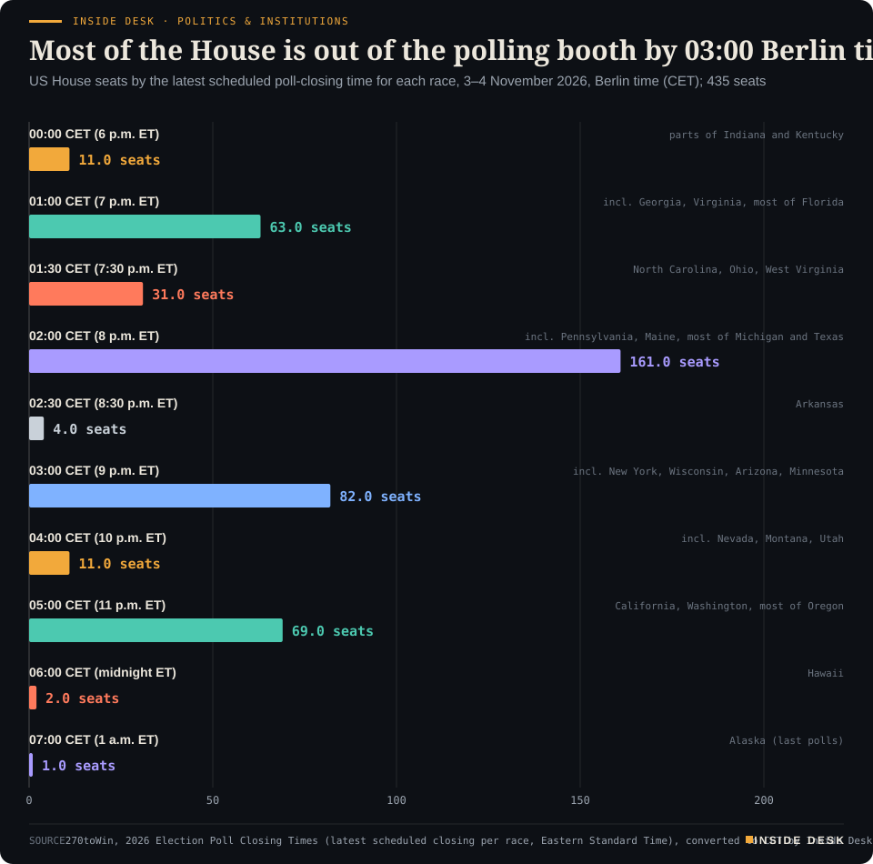
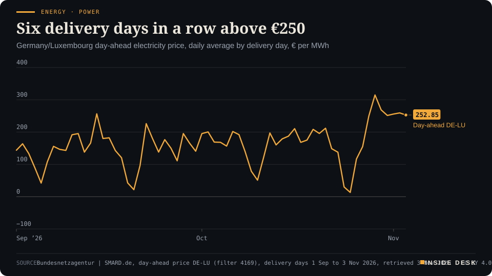
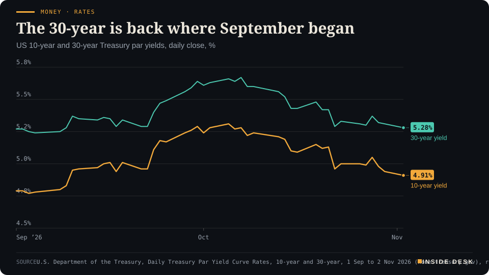
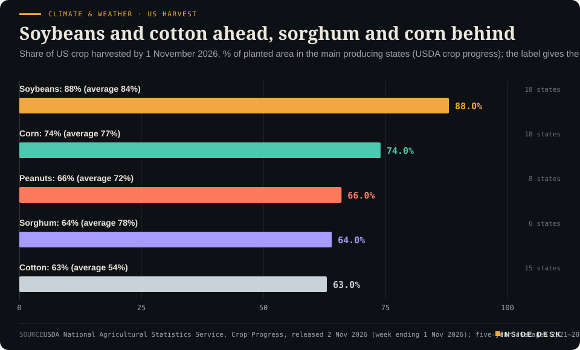

Inside Desk ePaper, Morning ePaper · Tue 3 Nov 2026
Tuesday, 3 November 2026Always free
Inside Desk
Morning ePaperAvailable 06:30 CET · Berlin
Lead · Politics & Institutions
America votes today. By the time you read this nothing has been counted, and the most useful thing to know is not who is ahead but which clock each state runs on.
America votes today: polls close between midnight and seven, Berlin time, and the law gives states until December to certify. Elsewhere, Apple's warehouse holds two and a half times last year's stock, Treasury needs $618 billion by Christmas, Australia raised rates again, and German power stayed above €250 for a sixth day.
America votes today: polls close between midnight and seven, Berlin time, and the law gives states until December to certify. Elsewhere, Apple's warehouse holds two and a half times last year's stock, Treasury needs $618 billion by Christmas, Australia raised rates again, and German power stayed above €250 for a sixth day.
11 edition pieces · 11 desks · Available 06:30 CET, 3 November 2026
22 ePaper extras, added , 3 November. They appear only in the ePaper and carry their own time.
The website edition follows at 08:30.
The ePaper rhythm
06:30 Morning ePaper (website edition at 08:30)
17:30 Evening ePaper, updated live until 22:30 with an “Updated” time and a Latest page
Sun 10:00 The Sunday Magazine
Berlin time. Every issue is free.
How to read it
Swipe, use the arrow keys or the page strip. Tap any headline for the reading view. Press / to search, t for contents, +/− to zoom. Download the PDF.
LeadInside Desk · Morning ePaper3 November 2026
Politics & Institutions · Lead · 4 min
America votes today. By the time you read this nothing has been counted, and the most useful thing to know is not who is ahead but which clock each state runs on.
Today Americans vote for all 435 seats in the House, 35 Senate races and 36 governors, by the tally of poll-closing times kept by 270toWin1. When you open this at breakfast in Berlin, the polls on the East Coast have not even opened. Nothing has been counted, and for a few hours more nothing can be. That makes this the right morning to look at the machinery rather than the mood.
Start with the clock. US clocks went back on Sunday, so Eastern time is now six hours behind Berlin. The first polls close at 6 p.m. Eastern, in the eastern parts of Indiana and Kentucky. In Berlin that is midnight1. The last close at 1 a.m. Eastern in Alaska’s far west, 07:00 CET on Wednesday, as you reach for the coffee again1. In between, the night comes in waves. The biggest is at 02:00 CET, when 161 House seats close, including Pennsylvania, Maine, most of Michigan and most of Texas1.
Desk arithmetic: by 03:00 CET, polls will have closed for 352 of the 435 House seats (81%) and 31 of the 35 Senate races1. Then comes the West: California and Washington alone close 69 House seats at 05:00 CET1. If you go to bed at midnight and wake at seven, the shape of the night will be clear. Almost none of it will be official.
That is because there are two clocks, and only the first one is fast. The first is the media’s: projections drawn from unofficial returns, made when a margin is wide enough. The second is the law’s. Ballotpedia’s survey of state rules shows that only four states have a state certification date within a week of the election; 25 certify between 11 and 30 November; 16 states and the District of Columbia certify in December; and five set no date in statute3. Oklahoma, South Dakota, Vermont and Wyoming come first, on 10 November3. California’s secretary of state has until 11 December, and Mississippi’s last declaration falls on 31 December3. Pennsylvania’s counties must finish their computation by 19 November3. If a race is still “uncalled” on Thursday, the institutions are not late. They are on schedule.
The machinery has also had a busy weekend in court, and it held. On Monday the Supreme Court turned down the Justice Department’s request to make California set aside mail ballots from about 20,000 people on a federal list of alleged non-citizens2. The order was one line, unsigned, with no noted dissents2. A district judge had already called the government’s process “rife with uncertainty and errors”, and a divided appeals court had refused the same request2. The 9th Circuit panel wrote that there was “no feasible way” to separate individual ballots “without potentially catastrophic effects on the entire system”4. More than 6 million mail ballots had already been returned across California2. On Sunday a federal judge in Anchorage dismissed a separate suit that sought to stop Alaska certifying its Senate result in certain circumstances2,4. On Friday a judge in California issued a temporary restraining order, sought by election workers’ unions among others, that bars the Justice Department from threatening to prosecute election officials who do not follow its demands on alleged non-citizen voting4.
LeadInside Desk · Morning ePaper3 November 2026
Inside Desk · Politics & InstitutionsMost of the House is out of the polling booth by 03:00 Berlin timeUS House seats by the latest scheduled poll-closing time for each race, 3–4 November 2026, Berlin time (CET); 435 seats

Bar chart of the 435 US House seats by the latest scheduled poll-closing time for each race, in Berlin time. 11 seats close at 00:00 CET, 63 at 01:00, 31 at 01:30, 161 at 02:00, 4 at 02:30, 82 at 03:00, 11 at 04:00, 69 at 05:00, 2 at 06:00 and the last, Alaska's single seat, at 07:00 CET on Wednesday 4 November. By 03:00 CET polls have closed for 352 of the 435 seats.
Source: 270toWin, 2026 Election Poll Closing Times (latest scheduled closing per race, Eastern Standard Time), converted to CET by Inside Desk (ET + 6 hours); retrieved 3 Nov 2026 · CSV
You do not need a view on the politics to see what this means for the count. The ordinary procedure was challenged in court three times in four days. Each time, a court left it alone. Confirmed cases of non-citizen voting are rare, CBS notes, and it is already a federal crime2. The counting, in short, goes ahead under the same rules as before.
Then there are the ballots already in. Newsquawk, summarising the University of Florida tracker, put early ballots at 54.8 million on Monday, 56% of them cast in person4. …
Geo-economicsInside Desk · Morning ePaper3 November 2026
Geo-economics · 2 min
Washington's intellectual-property probe of Vietnam has a deadline this month. The submissions show who would pay for a new tariff before anyone has proposed one.
There is a date on the calendar for Vietnam. The US administration has set 29 November as the deadline to conclude a trade probe, launched in May, into the country’s alleged intellectual-property violations1. Vietnam has been designated a “priority foreign country”, the first jurisdiction in 13 years to be put in that most serious category of the US watchlist1. Desk arithmetic: from today, that is 26 days.
Nobody has yet said what would follow. Reuters reports it is not clear whether any tariff tied to the probe would be general or aimed at particular sectors1. What is on paper already: a general 12.5% US tariff on Vietnamese goods, imposed in July after a forced-labour investigation, and the memory of the 20% “Liberation Day” rate that the Supreme Court struck down1. Many economists, Reuters notes, think the aim is to get back to at least that level1. That is their reading, not a published plan.
The more useful document is the comment file, because it shows who would pay. Tesla asked the Trade Representative to “take into account the supply chain needs of American manufacturers”, saying some advanced components and precision equipment cannot be sourced in the US1. Samsung’s US unit pointed out that Vietnam makes a large share of the phones and network gear it sells in America; the company is Vietnam’s biggest foreign investor, with about $25 billion put in1. Retailers and makers of shoes, clothes, bicycles and games consoles also argued against new tariffs1.
On the other side of the file sit US producers of steel, seafood, plywood, solar panels and wood products, who asked for tariffs, and the software, film and music industries, who want firm commitments on piracy rather than a duty1. …
Geo-economics · Short item · ePaper extra, added
The US port fees on China-linked ships are suspended to 9 January. The people who move the boxes have written to ask for 'permanently'.
Some of the most consequential trade policy is a fee that is not being charged. The US Section 301 port fees aimed at China-linked vessels, born of a probe into China’s targeting of the maritime, logistics and shipbuilding sectors, are suspended until 9 January 2027 after the Trump–Xi summit1.
A coalition of hundreds of stakeholders has now asked for more than a delay. In a 30 October letter to US Trade Representative Jamieson Greer, they welcomed the two-month extension and asked the administration to “permanently suspend the fees to provide certainty to the global supply chain”1. New fees, they wrote, “would create immediate and far-reaching consequences” for US firms that ship by sea1.
The signatures are worth reading as a list of who carries the risk: the World Shipping Council, the International Chamber of Shipping, the US Chamber of Commerce, the National Association of Manufacturers, the National Retail Federation, the American Farm Bureau Federation and the American Association of Port Authorities1. Importers and exporters, farmers and port operators rarely sign the same page.
Their complaint is a ledger, not a slogan: higher costs for ocean freight, trucking, warehousing, insurance and inventory, shifting carrier capacity, equipment shortages and congested inland networks1. The letter also says strengthening US maritime capacity is “an important national objective”1. That is the constructive part. Nobody is arguing against shipyards; they are arguing about who pays for them, and when.
For you, the date to note is 9 January. A suspension that lapses is a fee that returns, and carriers price what they expect.
Geo-economicsInside Desk · Morning ePaper3 November 2026
Geo-economics · Brief · ePaper extra, added
South Korea shipped a record $115.3 billion of goods in October, up 93.7% on a year earlier; imports rose 36% to $72.78 billion, leaving a $42.5 billion surplus1. Semiconductors alone were $56.4 billion, up 259%1. Desk arithmetic: that is about 49% of everything the country sold abroad.
The geography is the point. Exports to China rose 133.6% to $26.98 billion; to the US, 185.8% to $24.9 billion1. Two rivals, one supplier, and roughly the same order size. The ministry expects annual exports could reach $1 trillion as early as November if the trend holds1. The minister still spoke of “rising protectionism” and difficulties for small firms1. A record month and a cautious minister are not a contradiction. They are a customs ledger read honestly.
Markets & MacroInside Desk · Morning ePaper3 November 2026
Markets & Macro · Podium vs Print · 2 min
Apple's new chief executive promised a holiday season to remember. His finance team printed the margin it expects to pay for it.
Podium
“Together with the all-new Siri AI, it's an incredible lineup to carry us into the holiday season.”
John Ternus, Apple's chief executive, in the fourth-quarter results release, Monday 2 November 2026, after the US close
Print45% to 46%
Expected gross margin for the holiday quarter, down from 47.9% in the September quarter, as memory chips get dearer.
Apple's own guidance for the December quarter, as reported by Reuters, Monday 2 November 2026, on the investor call
The podium. John Ternus has run Apple since September, and Monday was his first results day in charge2. He had a record to read out: revenue of $114.5 billion for the quarter to 26 September, up 12% on a year earlier, a September-quarter record for the iPhone and an all-time high for services1. Then he turned to the shop window: the iPhone Duo, “the most transformational iPhone since the original”, new home hardware, touch on the Mac and “an incredible lineup to carry us into the holiday season”1.
The print. On the investor call, the numbers for that holiday season were more sober. Apple expects a gross margin of 45% to 46% for the December quarter, down from 47.9% in the quarter just reported, because memory chips keep getting dearer, Reuters reported2. The finance chief, Kevan Parekh, said he expects memory costs to keep rising into next year2. The shares fell 4% during the call before paring the loss to about 2%2. They had already closed nearly 2% lower in regular trading3.
The gap. The two statements are not in conflict; they describe two sides of the same invoice. The 47.9% already included a favourable effect of about one percentage point from tariff refunds, Apple said1. Desk arithmetic: without that, the September quarter was nearer 46.9%, so the new guidance is roughly one to two points below the underlying figure, not three. Apple has also raised iPhone 17 prices by $100 and some MacBook prices, and Ternus said “these price increases provided some offset”2. Its purchase commitments rose by $33 billion in the quarter, the operations chief said, as it works with memory suppliers2.
What the speech left out. Demand is not the problem. Ternus told Reuters the Duo is “constrained as of today”, with no date for supply to catch up, and that a “very small percentage” of units had come back for display problems2. The constraint is the supply chain and its prices. For you, the lesson is the usual one: the lineup is the headline, the purchase commitments are the story, and the margin guidance is the number that gets checked in three months. Nothing here is investment advice.
Markets & Macro · Short item · ePaper extra, added
Monday's settled figures are in. The paint shop and the DIY store carried the Dow; the chip trade did not.
Last night’s evening update had to work with late-session figures. The settled close is now in, and it is weaker. The Nasdaq Composite fell 1.07% to 25,164.32 and the S&P 500 lost 0.51% to 7,541.40, CNBC reported1. Both had been up by as much as 1.4% and 1.1% during the day1. The Dow Jones Industrial Average rose 213.67 points, or 0.41%, to 51,983.981.
The split had names on it. Sherwin-Williams rose almost 6% and Home Depot 3.6%, and Honeywell, 3M and Boeing each gained more than 2%1. On the other side, Marvell fell almost 13% and Lumentum 18% on their $115 billion deal, and Oracle lost 8% after saying it would sell $10 billion of shares and $10 billion of bonds to fund its AI build-out1. IDEXX Laboratories, which sells tests to vets, jumped 20% after beating estimates1.
The day’s dullest number may matter most. US construction spending fell 1.9% in September, the biggest monthly drop since April 2020, against an expected rise of 0.4%1. Investors spent the day buying the shops that sell paint while the building sites were spending less.
Asia opened Tuesday on the tech side of that ledger, with Seoul’s Kospi down a little over 3.5% at one point2. Nothing here is investment advice.
Markets & MacroInside Desk · Morning ePaper3 November 2026
Markets & Macro · Brief · ePaper extra, added
South Korea’s consumer prices rose 2.8% in October from a year earlier, after 2.9% in September and 3.1% in August, Yonhap reported from official data1. Petrol and diesel did the pushing: petroleum products were up 14.9%, while apples, cabbages and cucumbers got cheaper1.
The stock market had other things on its mind. By 09:16 Seoul time (01:16 CET) the Kospi was down 3.23% at 5,669.70, with Samsung Electronics down 4.3% and SK hynix 4.9%2. Foreign investors and institutions sold; individual investors were net buyers of about 1.16 trillion won2. A Kiwoom Securities researcher called the macro backdrop “favorable” and blamed the US correction in AI shares2. Nothing here is investment advice.
Politics & InstitutionsInside Desk · Morning ePaper3 November 2026
Politics & Institutions · Short item · ePaper extra, added
Israel's president starts his consultations on Wednesday with the smallest party and ends with the largest. A change of order is not a change of law, but it is a signal.
While America votes, Israel moves into the slow, formal part of its own election. The results of the 27 October vote are due to be certified on Wednesday2. That afternoon, President Isaac Herzog begins meeting the 11 parties that won seats, and he will take them in an unusual order: smallest first, starting with Religious Zionism-Zehut at 16:00 CET, and ending with Benjamin Netanyahu’s Likud at 19:30 CET on Thursday1. His office says the aim is to “encourage thinking outside the box”1.
The arithmetic explains why. Netanyahu’s bloc won 53 of the Knesset’s 120 seats, and the opposition “Change” bloc of Gadi Eisenkot won 48. Neither reaches the 61 needed2. The Arab-led Joint List and Ra’am won a record 19 seats between them, and both say they will work with the opposition to replace the government. The Joint List says it would not join a cabinet but would vote with one2. Desk arithmetic: 48 plus 19 is 67.
The law leaves the president room. He is not bound to choose the candidate with the most recommendations, only the one most likely to form a government. That person then has 28 days, plus up to 14 more1. The consultations will be streamed live1.
There is noise around the process: Netanyahu has alleged fraud without evidence, and protesters gathered outside Eisenkot’s home2. The head of the Central Elections Committee answered on Sunday. Even if the suspicions were proved, he said, they “would not undermine the integrity of the electoral process or the election results as a whole”2. The members of the new Knesset are sworn in on 10 November, whatever the talks produce2.
“I guess I’ll become Mr. Veto,” President Trump told a New York Post podcast if Democrats win Congress, adding that “at some point, we’ll probably make deals”1. Reuters, citing three sources, reports that aides have been working since April on executive measures on immigration, tariffs, housing costs and spending that need no new law1. The White House rejected suggestions of Republican losses1.
The dull checks still apply. Courts can strike down actions that go beyond what a statute allows. A Senate majority can block nominees. And no administration can stop congressional oversight: hearings, subpoenas and document requests1. A veto stops a bill. It does not stop a question.
Psychology & BehaviourInside Desk · Morning ePaper3 November 2026
Psychology & Behaviour · 2 min
A Belgrade study of 514 adults finds that dark personality traits and sloppy, overconfident reasoning both go with rule-breaking, but separately. That matters for what you try to fix.
There is a comfortable idea that bad behaviour is mostly bad thinking: people break rules because they jump to conclusions, and if they slowed down they would behave better. A study published in the International Journal of Psychology tests that idea and finds it only half right1.
Janko Mededović and colleagues at the Institute of Criminological and Sociological Research in Belgrade tested 514 adults, most of them university students1. They measured the four “Dark Tetrad” traits: psychopathy, narcissism, Machiavellianism and sadism. They gave a logic test built to tempt people into quick wrong answers. They asked people how well they thought they had done, and how they compared with the average person on looks, intellect and morals. Then they asked about their own rule-breaking1.
Both sets of factors mattered. Sadism, psychopathy and Machiavellianism predicted more self-reported rule-breaking; narcissism did not1. So did getting more logic questions wrong, and being overconfident about one’s intellect, looks or test score1. One twist: people who were overconfident about their own morals reported less rule-breaking. People high in the three predictive traits had lower moral overconfidence, which the authors think may reflect some awareness that their values differ from the norm1.
The finding that matters is the one that did not appear. The researchers expected the dark traits to work through poor reasoning. The path analysis showed no such link: the thinking habits tied to dark traits were mostly different from those tied to rule-breaking1. The two are, in the authors’ framing, separate pathways1.
That has a practical point for you, and for anyone who runs a school, a prison programme or a compliance department. Training in careful reasoning and realistic self-assessment may help people whose trouble starts with hasty decisions. It is unlikely to help much where the driver is the personality itself1. The limits are real: a student sample, one point in time, self-reported misdeeds1. …
Psychology & Behaviour · Short item · ePaper extra, added
Among about 12,000 American children, those living nearer tree canopy and parks did better on attention tests. Cleaner air seems to be part of the reason; running about did not.
If you have ever come back from a walk in the woods able to think again, psychologists have a name for it: attention restoration theory. A team at Washington University in St. Louis has tested it on children, and the result is published in Environment International1.
They used the ABCD study, which follows roughly 12,000 American children with a median age of 101. Their green-space measure was the average share of tree canopy and park cover in each child’s census tract, so a verge of mown grass counts for little1. …
Psychologists call it “symbolic immortality”: the sense that part of you will live on through people, work or legacy. A Hebrew University team surveyed 2,912 Israeli adults in February 2025, in wartime1. Those who more strongly expected to be remembered reported fewer symptoms of depression, anxiety and post-traumatic stress. They also reported less problematic drinking, gambling and social-media use1. The links were modest to small, but consistent1. Belief in an afterlife, by contrast, was not consistently linked with better mental health1.
The authors caution that the direction may run the other way: poor mental health can make a legacy feel out of reach1. Still, the things that feed the feeling are ordinary ones. They are relationships, community and work that others rely on.
Energy & IndustryInside Desk · Morning ePaper3 November 2026
Energy & Industry · 2 min
Monday's full ledger is in. Germany burnt more gas, not less, and paid above €250 for a sixth day running. The forward market is quoting a calmer 2027.
Tuesday’s power is priced, and the streak holds. The day-ahead auction set an average of €252.85 per megawatt hour for Germany and Luxembourg on Tuesday 3 November, SMARD’s figures show1. That is the sixth delivery day in a row above €250, after €314.85 on Thursday 29 October, the highest daily average of the year so far1.
Energy · PowerSix delivery days in a row above €250Germany/Luxembourg day-ahead electricity price, daily average by delivery day, € per MWh

Line chart of the daily average German-Luxembourg day-ahead electricity price from 1 September to 3 November 2026, in euros per megawatt hour. It reaches a September high of €256.55 on 14 September, falls to €30.12 on Saturday 24 October and €13.12 on Sunday 25 October during the storm, then climbs to €314.85 on Thursday 29 October, the highest daily average of 2026 so far. Every delivery day since has stayed above €250: €268.62 on Friday 30 October, €251.42 on Saturday 31 October, €255.91 on Sunday 1 November and €259.31 on Monday 2 November. The latest value is €252.85 for delivery on Tuesday 3 November.
Source: Bundesnetzagentur | SMARD.de, day-ahead price DE-LU (filter 4169), delivery days 1 Sep to 3 Nov 2026, retrieved 3 Nov 2026 · CC BY 4.0 · CSV
Monday burnt more gas, not less. Yesterday European gas prices fell sharply as Washington signalled diplomacy with Iran and a cold snap dropped out of the forecasts, power2market reported2. The gas plants did not notice. SMARD’s provisional figures for the whole of Monday show 316.3 gigawatt hours generated from natural gas, against 282.6 on Sunday1. …
Energy & Industry · Short item · ePaper extra, added
Monday's oil price settled on diplomacy. Tuesday's opened on a strike near the Strait of Hormuz.
The settled figures for Monday are larger than the intraday ones. Brent crude futures closed $8.66, or 7.63%, lower at $104.77 a barrel, Reuters reported1. US WTI settled 7.36% lower at $96.46, according to CNBC2. The trigger was diplomacy: Tehran said contacts with Washington to end the war were continuing, and President Trump said a deal could happen1.
Then came Tuesday. Brent rose 48 cents, or 0.5%, to $105.25 by 02:04 CET, and WTI was up 47 cents at $96.93, after the Wall Street Journal reported, citing US officials, that the United States had struck Iran’s Qeshm Island1. …
Energy & Industry · Brief · ePaper extra, added
Monday’s day-ahead auction priced Tuesday’s power at €252.85 per megawatt hour in Germany and €297.69 in Austria, power2market reported1. That is €44.84 more for the Austrian baseload1. Austria’s peak price reached €327.60, against €265.33 in Germany1.
The spread inside the day was wider too. Austrian quarter-hour prices ranged from €232.00 to €345.42, a gap of €113.42; in Germany the range was €229.90 to €309.16, a gap of €79.261. Slightly more wind at night, and a little more solar, helped the German side, the analysis said1.
Prices differ across a border when the cables between two markets are full. A single European market is built auction by auction, and line by line. Nothing here is investment advice.
Money, FX & CommitteesInside Desk · Morning ePaper3 November 2026
Money, FX & Committees · 2 min
Washington's quarterly shopping list arrived on the eve of the vote. The long end of the bond market had already cooled since October.
While the campaigns made their last speeches, the US Treasury published a table. It expects to borrow $618 billion in privately held net marketable debt in October to December, assuming it ends December with $850 billion in cash1. That is $10 billion less than it estimated in August1. For January to March it expects $800 billion1.
The smaller number is not quite a saving. Treasury says the lower estimate comes mainly from starting the quarter with more cash than assumed: $984 billion instead of $950 billion1. Leave that out, and this quarter’s borrowing estimate is $24 billion higher than in August1. Desk arithmetic: $618 billion plus $800 billion is $1.418 trillion of net new borrowing from the public in six months.
Money · RatesThe 30-year is back where September beganUS 10-year and 30-year Treasury par yields, daily close, %

Line chart of the daily US 10-year and 30-year Treasury par yields from 1 September to 2 November 2026. On 1 September the 10-year is at 4.79% and the 30-year at 5.27%. Both climb through September; the 10-year peaks at 5.31% on 5 October and the 30-year at 5.67% on 7 October. Both then fall through October. On Monday 2 November 2026, the latest value, the 10-year is at 4.91% and the 30-year at 5.28%, one hundredth of a point above where it began September.
Source: U.S. Department of the Treasury, Daily Treasury Par Yield Curve Rates, 10-year and 30-year, 1 Sep to 2 Nov 2026 (home.treasury.gov), retrieved 3 Nov 2026 · U.S. government data, public domain · CSV
The price of that borrowing has eased. The 10-year Treasury yield closed at 4.91% on Monday and the 30-year at 5.28%, according to Treasury’s daily par yield curve2. …
Money, FX & Committees · Short item · ePaper extra, added
The Reserve Bank moved again and said inflation will take about three quarters longer to come back than it thought in August.
The Reserve Bank of Australia raised its cash rate target by 0.25 percentage points to 4.85% on Tuesday1. It was the fifth increase of 2026, and the cash rate is now at its highest since late 2008, ABC News reported2. The board was split: six members voted to raise, three to hold at 4.60%1.
The reason is in the bank’s own forecasts. …
Money, FX & Committees · Brief · ePaper extra, added
US construction spending fell 1.9% in September, the Commerce Department reported on Monday, the biggest monthly drop since April 20201. Economists polled by Dow Jones had expected a rise of 0.4%1. Compared with a year earlier, spending was down 2.7%1.
Homes did the falling. Residential spending dropped 5.5%, more than offsetting a 0.6% rise in non-residential projects; private construction fell 2.4% and public spending 0.1%1.
The same afternoon, Sherwin-Williams and Home Depot rose almost 6% and 3.6%1. A share price is a bet on next year; a construction survey is a receipt for last month. Both are information, and only one of them has already been paid. Nothing here is investment advice.
Ordinary & Inherited LifeInside Desk · Morning ePaper3 November 2026
Ordinary & Inherited Life · 2 min
October's fuel bill fell after the tank rebate. The ADAC's monthly review shows how much of the tax cut reached your receipt, and where it got stuck.
The ADAC has added up October at the pump, and for once the line on the household ledger went the right way. A litre of Super E10 cost an average of €2.114, about 15.2 cents less than in September; diesel averaged €2.261, down 12.5 cents1. The main reason, the club says, is the tank rebate (Tankrabatt) that started on 1 October and runs to the end of the year1.
The ledger.
- Super E10, October average: €2.114 per litre, down 15.2 cents1.
- Diesel, October average: €2.261 per litre, down 12.5 cents1.
- Tank rebate, as the ADAC calculates it: about 17 cents per litre1.
- Dearest E10 day: 13 October, €2.151. Cheapest: 30 October, €2.0681.
- Dearest diesel day: 27 October, €2.289. Cheapest: 7 October, €2.2261.
Where the cut went. The ADAC’s reading is that most of the roughly 17 cents reached drivers of petrol cars, while for diesel the relief “only partly” arrived1. It wants the rebate passed on in full, and says prices remain too high and “not fully understandable”1. Desk arithmetic: the monthly fall equals about nine-tenths of the rebate for E10 and about three-quarters for diesel. Other costs moved in October too, so treat that as a rough guide, not a verdict on any one station.
At your tank. Desk arithmetic: at October’s averages, 50 litres of E10 cost €105.70, about €7.60 less than at September’s level; 50 litres of diesel cost €113.05, about €6.25 less. Diesel ended the month 14.7 cents a litre dearer than E10 on average.
The cheapest variable is still the day. Between the dearest and cheapest E10 days the gap was 8.3 cents, or about €4.15 on a 50-litre fill (desk arithmetic)1. The ADAC points to its “ADAC Drive” app, which compares prices at more than 14,000 stations around the clock1. Any of the official price-comparison apps will do the same job. You do not need to chase pennies across town. You need to avoid filling up on the dear evening because you forgot in the cheap morning.
The rebate ends on 31 December1. That is a date for your calendar, not a reason to hoard fuel in jerrycans. Nothing here is investment advice.
Ordinary & Inherited Life · Short item · ePaper extra, added
Consumer advisers warn of Commerzbank phishing emails dressed up as EU law. The tell is not the logo. It is the hurry.
Real rules arrive with real dates, and fraudsters know it. The Verbraucherzentrale is warning about a new wave of fake emails in the name of Commerzbank1. They claim that under a European payments directive “PDS3”, payment providers have since “31.10.026” been obliged to use stronger two-factor authentication, so your 3D-Secure card security must be renewed1. Spelling as in the original.
Then comes the deadline: 24 hours, or your credit card and your whole account will be blocked1.
The consumer advisers list the signs: an odd sender address, an impersonal greeting, and above all the enormous pressure to act now1. …
Ordinary & Inherited Life · Brief · ePaper extra, added
On Friday 30 October Lidl cut its 250g own-brand German butter by 4 cents to €1.15, or €4.60 a kilo; Norma, Aldi Nord and Aldi Süd followed on Saturday1. The farm side moved the other way: the Kiel raw-milk value rose 9.2% in October to 46.5 cents a kilo, and many dairies raised what they pay farmers in September and again in October1.
agrarheute’s own arithmetic leaves the shops about €4.30 a kilo after VAT, below the bottom of the Kempten wholesale quote for packed butter of €4.35 to €5.001. Butter is a price customers compare shops by, so rivals match every move1. For your trolley: enjoy the four cents, and do not read them as a forecast for cheese or milk.
Tech & ComputeInside Desk · Morning ePaper3 November 2026
Tech & Compute · 2 min
On the call, Ternus spoke of memory prices 'unprecedented' and of 'the benefit of carrying inventory'. The balance sheet in the press release shows how much inventory that is.
The document. Apple’s results for the fiscal quarter to 26 September came out on Monday at 22:30 our time: revenue of $114.5 billion, up 12% on a year earlier, and earnings per share of $2.101. The press release has the quotes. The three pages of condensed statements attached to it have the more useful lines2.
The line. Inventories stood at $14.54 billion on 26 September, against $5.72 billion a year earlier2. Desk arithmetic: that is about 2.5 times as much, an extra $8.8 billion of components and finished goods. On the call, chief executive John Ternus said memory pricing was “unprecedented”4, and told CNBC that higher memory costs were “partly offset by the benefit of carrying inventory and lower costs on non-memory components”3. Apple does not say in these pages what the warehouse holds. The two statements fit together, and we leave it there.
The lines around it. Spending on research and development was $11.73 billion in the quarter, against $8.87 billion a year earlier2. Desk arithmetic: up 32%, much faster than revenue. Capital expenditure was $2.24 billion, below the $3.33 billion analysts had expected, CNBC reports, a long way from the hyperscalers’ bills3. Greater China sales rose to $17.54 billion from $14.49 billion, up 21%, even though they came in below analysts’ estimates2,3,4. Services grew to $31.57 billion; desk arithmetic: up 9.8%, which CNBC calls the slowest growth since 20222,3.
What it means for the next quarter. Gross margin was 47.9%, including about one point from tariff refunds1. For the December quarter, Apple guided to a margin of 45% to 46% and revenue growth of 7% to 10%3. The shares fell about 3% in extended trading3. Prices had already risen: Apple raised them across the board in June, iPhones by $1003.
Tech & Compute · Short item · ePaper extra, added
Germany's AI task force wants the state to be an 'anchor customer' and 80% of large firms using AI by 2030. The budget is for later.
Germany should be a “sovereign AI nation” by 2030, according to a report from the federal government’s AI task force, which POLITICO obtained and which was due to be presented on Monday to the National Security Council and at an AI summit in Berlin1. “The next 12 to 18 months will therefore be decisive in setting the course,” it says1.
The plan has 18 measures1. They include expanding AI computing infrastructure and linking it into a European network, strengthening the semiconductor value chain, and working with France and Canada, and with Mistral, to secure “sovereign access” to leading models1. …
Tech & Compute · Brief · ePaper extra, added
Onsemi, the American power-chip maker, reported third-quarter revenue of $1.72 billion after Monday’s close and announced two deals1. It will buy Ferric, which makes integrated voltage regulators, the parts that feed power to processors, for $600 million in cash plus up to $175 million if revenue milestones are met1. With it, onsemi raised its 2030 target for AI data-centre revenue to more than $3 billion1. “The rapid growth of AI is reshaping the requirements for power delivery,” said chief executive Hassane El-Khoury1.
The second deal is a re-cut. Onsemi’s planned purchase of Synaptics now runs at about $5.7 billion in cash, against $7 billion in stock under the earlier agreement1. The shares fell 4.6% in extended trading1. AI needs chips, and the chips need power delivered to them, which has a price of its own. Nothing here is investment advice.
Health & CareInside Desk · Morning ePaper3 November 2026
Health & Care · 2 min
A one-year surcharge on hospital bills has expired. A snap survey shows what clinics say they will cut first, and a smaller replacement is still only a plan.
Hospitals in Germany lost a line on their invoices this weekend. The one-year “Sofort-Transformationskosten” surcharge of 3.25% on hospital bills expired on 31 October 20261. It cost €4 billion and was paid out of the federal special fund (Sondervermögen)1. The government is planning a new surcharge, worth €450 million a year1. Desk arithmetic: that is about one-ninth of the old one.
The German Hospital Institute (DKI) asked clinics what that means for them. In a snap survey of 267 general hospitals between 22 and 27 October, 76% said they expect a very heavy financial burden; among hospitals in thinly populated rural districts the figure was 85%1. Seventy per cent do not think they can make up the loss on their own, and 26% think they can partly1.
What they say they will cut.
- Hiring freezes or leaving posts empty: 76%1.
- Postponing or cancelling investment: 65%1.
- Reducing staff: one in two1.
- Restricting or dropping services: about one in three1.
- Many also plan to cut spending on materials1.
Read the survey for what it is. The DKI says it is not representative, and an expiring payment is exactly the moment when a sector’s own institute asks its members how much it hurts1. Intentions in a survey are not decisions in a board meeting. But the direction is plain, and it falls hardest outside the cities, where the nearest alternative hospital is furthest away.
The constructive part is that this is now a question of budgets and dates, not of slogans. A surcharge is a number in a law; so is its replacement. The €450 million plan can be argued over line by line, and the gap between it and €4 billion is the honest size of the argument1. If your local hospital matters to you, the place to watch is not the speech about hospital reform but the next set of board minutes and the district council budget.
Health & Care · Short item · ePaper extra, added
From January, pseudonymised data from the electronic patient record is due to flow to a research centre. A large survey finds broad acceptance, with one clear limit.
The electronic patient record (ePA) is about to do a second job. From January 2027, pseudonymised ePA data is due to be passed to the Research Data Centre at the BfArM in Bonn, for research in the public interest1. At first only the electronic medication list will be sent; discharge letters, lab results and medication plans are planned for later years1.
A forsa survey for the AOK, of 8,583 adults between 7 and 30 September, asked people what they think1. 76% said it was very good or fairly good that ePA data will be used this way1. Among people with statutory insurance, 79% found it acceptable if the data carried no name, date of birth or other direct identifiers1. 64% trust that the data will be protected from unauthorised access; 19% are sceptical1. …
Health & Care · Brief · ePaper extra, added
Health ministry state secretary Katja Kohfeld gave a first look on Monday at the long-awaited health-security bill (GeSiG)1. Three parts: a “Personalreserve Gesundheit” that could bring retired doctors and other staff back in a crisis and train helpers; larger stockpiles of medicines and devices, since today’s reserves mostly cover two to six weeks; and a central health situation picture shared across the system1.
The KBV’s Stephan Hofmeister welcomed the data sharing but rejected obliging practices to take part: “We do not believe that is a good instrument”1. He said outpatient care handles 97% of statutory treatment cases, more than 586 million a year, including 61.7 million check-ups and screenings, which could be paused in an emergency1. Preparedness is mostly lists, rotas and storerooms. That is good news: those can be built in peacetime.
Security & OrderInside Desk · Morning ePaper3 November 2026
Security & Order · 2 min
Kyiv had warned that Moscow would use the US vote as cover for a heavy strike. Overnight the strike came, and the first count is of windows, wards and evacuations.
On Monday evening President Volodymyr Zelensky said Ukrainian intelligence knew Russia was preparing “a new massive strike”, mainly on energy and logistics2. He suggested the Kremlin was counting on the world’s attention being on Tuesday’s US elections2. Overnight, the strike came.
The worst-documented damage so far is in Kharkiv, Ukraine’s second city, about 30 kilometres from the Russian border1. Mayor Ihor Terekhov said the city was hit with ballistic missiles and guided aerial bombs. One strike landed on a medical facility in the Nemyshlianskyi district, in a section linking its buildings1. By early morning 46 people were reported injured, up from four in the first reports1,2. More than 1,000 windows were broken across the facility and nearby flats, and about 200 patients were being moved to other hospitals1.
Elsewhere, the regional head in Dnipropetrovsk, Oleksandr Hanzha, reported strikes on critical infrastructure in Dnipro and the Kryvyi Rih district at about 03:10 CET2. Explosions were heard in Vinnytsia region at about 02:15 CET2. Focus.ua said the targets again appeared to include the energy plants that heat millions of homes2. It also passed on monitoring-channel reports of Iskander-M, North Korean-made KN-23 and Zircon missiles, and was careful to say that these counts “need confirmation by official sources”2. This desk holds to the same rule. The verified facts this morning are a damaged hospital, injured people and an evacuation.
Security & Order · Short item · ePaper extra, added
A drone entered Latvian airspace for 17 minutes on Sunday evening. The most telling decision of the night was the one not to follow it.
At 17:59 CET on Sunday, an unidentified drone crossed into Latvian airspace. An orange alert went out in the eastern districts of Krāslava and Ludza2. The military launched a BLAZE interceptor drone1,2. At 18:16 CET the object left Latvia across the Russian border1. Three minutes later, near that border, Latvia set off the interceptor’s self-destruct mechanism “to prevent a possible risk of violating the state border”, the armed forces said (our translation). People heard the explosion1. The alert was lifted at 18:30 CET1.
Desk arithmetic: the incursion lasted 17 minutes, and the alert in the two districts about half an hour.
You could read this as a failure, since nothing was shot down. Read it the other way. …
Security & Order · Brief · ePaper extra, added
CISA, the US cyber and infrastructure agency, has tracked 107 election-related incidents reported in open sources between January 2022 and its plan’s publication in September 2026. Of these, 96 were bomb threats, five involved suspected explosive devices that functioned, five were suspicious packages, and one involved bomb-making materials found on site1. From 2022 to August 2026 it supported 58 exercises and carried out more than 2,100 physical-security assessments1.
In late October the FBI and Postal Inspection Service warned that letters with suspicious substances had been mailed to election offices around the country2. To date, they say, no hazardous material has been identified, though testing goes on2. Their advice is plain: gloves and masks for whoever opens the mail, call 911, close the door, and leave the powder where it is2.
Climate & WeatherInside Desk · Morning ePaper3 November 2026
Climate & Weather · 2 min
Last autumn a funding lapse cancelled six weeks of America's crop counts. This year the Monday sheet arrived on time, and it reads like a dry autumn: the beans are early, the corn and sorghum a little late, the soil short of water.
Every Monday from April to the end of November, the US Department of Agriculture publishes a few pages on how far the country’s farms have got. Last autumn, the pages stopped: because of a lapse in federal funding, the reports for the weeks ending 5 October to 9 November 2025 were cancelled, and this year’s sheet still says so in a special note at the top1. So the “previous year” column reads “NA”, and the five-year averages fill the 2025 gap with imputed estimates1. A missing number is a cost too, and farmers, grain buyers and insurers paid it last year.
This year’s report for the week to 1 November arrived on schedule on Monday evening1. Corn was 74% harvested across the 18 main states, up from 60% a week earlier and behind the 2021–2025 average of 77%1. Soybeans were 88% in, ahead of the 84% average1. Cotton is ahead, sorghum and peanuts behind1.
Climate & Weather · Short item · ePaper extra, added
Marsh Re says North American insurers still buy reinsurance for the rare catastrophe, while their losses increasingly come from repeated, mid-sized weather.
The weather that costs insurers most is no longer the weather their protection is designed for. That is the argument of a new report from Marsh Re, the reinsurance arm of the broker Marsh1. Hail, wildfire, winter storms and floods, the “secondary perils”, have become a major part of insured catastrophe claims in North America, it says, while many reinsurance programmes still mainly protect against the rare, very large disaster1.
The numbers it cites are plain. US insured losses from severe convective storms have stayed above $30 billion a year since 2020, and four of those years topped $40 billion1. Its comparison is starker still: 15 medium-sized hailstorms could hit an insurer’s annual earnings harder than a hurricane expected once in 100 years1. Since the market reset of 2023, insurers have also had to keep a bigger share of each loss before their reinsurance pays out1.
Marsh Re’s remedies sound like bookkeeping: check the models against your own claims history, record roof age and construction, and buy cover that responds to the sum of many events, such as annual aggregate or second-event layers1. That kind of cover is still hard to buy at acceptable prices, it says1. …
Climate & Weather · Brief · ePaper extra, added
Dust lifted from the Inner Mongolian Plateau on Saturday reached Seoul on Monday, the season’s first yellow dust, the Korea Meteorological Administration said1. At 13:00 local time the hourly PM10 average in Seoul was 149 micrograms per cubic metre, one below the “very bad” band, which starts at 1511. More dust was expected over western areas on Tuesday night1.
The cold comes behind it. Tuesday’s morning temperatures were forecast 5 to 8 degrees lower than Monday’s, with 3 degrees in Seoul, 0 in parts of Gyeonggi and Incheon, and frost inland1. Weekend morning lows of between minus 2 and 4 degrees are below the seasonal average1. The forecasters asked people to “take care of your health”1. Read plainly: a mask on Monday, a coat on Tuesday.
Charts and dataInside Desk · Morning ePaper3 November 2026
Charts and data
Energy · PowerSix delivery days in a row above €250Germany/Luxembourg day-ahead electricity price, daily average by delivery day, € per MWh
Line chart of the daily average German-Luxembourg day-ahead electricity price from 1 September to 3 November 2026, in euros per megawatt hour. It reaches a September high of €256.55 on 14 September, falls to €30.12 on Saturday 24 October and €13.12 on Sunday 25 October during the storm, then climbs to €314.85 on Thursday 29 October, the highest daily average of 2026 so far. Every delivery day since has stayed above €250: €268.62 on Friday 30 October, €251.42 on Saturday 31 October, €255.91 on Sunday 1 November and €259.31 on Monday 2 November. The latest value is €252.85 for delivery on Tuesday 3 November.
Source: Bundesnetzagentur | SMARD.de, day-ahead price DE-LU (filter 4169), delivery days 1 Sep to 3 Nov 2026, retrieved 3 Nov 2026 · CC BY 4.0 · CSV
Money · RatesThe 30-year is back where September beganUS 10-year and 30-year Treasury par yields, daily close, %
Line chart of the daily US 10-year and 30-year Treasury par yields from 1 September to 2 November 2026. On 1 September the 10-year is at 4.79% and the 30-year at 5.27%. Both climb through September; the 10-year peaks at 5.31% on 5 October and the 30-year at 5.67% on 7 October. Both then fall through October. On Monday 2 November 2026, the latest value, the 10-year is at 4.91% and the 30-year at 5.28%, one hundredth of a point above where it began September.
Source: U.S. Department of the Treasury, Daily Treasury Par Yield Curve Rates, 10-year and 30-year, 1 Sep to 2 Nov 2026 (home.treasury.gov), retrieved 3 Nov 2026 · U.S. government data, public domain · CSV
Latest values
Series
Value
Date
Chart
Day-ahead DE-LU
252.85
3 Nov 2026
Six delivery days in a row above €250
10-year yield
4.91%
2 Nov 2026
The 30-year is back where September began
30-year yield
5.28%
2 Nov 2026
The 30-year is back where September began
Last data point of each series in the charts above, from the Inside Desk data archive. Sources under each chart.
Back pageInside Desk · Morning ePaper3 November 2026
Before you close the tab
The day in one sentence
America votes today and will count for days, and a slow count is the system doing its job, not failing at it.
One thing you can do this week
Decide now when you will look at the American results: once, tomorrow morning, with a coffee, rather than every hour tonight. Polls close across the evening and the counting runs on for days in some states; a refresh at 2 a.m. adds worry, not ballots.
A habit, not advice.
What went right
Germany's solar panels fed 5.1 billion kilowatt hours into the grid in October, 40.4% more than a year earlier, according to an IWR analysis of grid operators' data published on Monday 1. October was the eighth month in a row with more sunshine than the long-term average, the German Weather Service's provisional figures show 1, but the bigger reason is plainer: more panels on more roofs. From January to October renewables supplied 63.4% of the electricity fed into the grid, up from 62.5% a year earlier, and they accounted for about 79% of this year's growth in supply 1. Wind had a weaker October, down 12.6% 1; the ledger has two columns, and the good one grew.
In euros at home
A litre of Super E10 cost €2.022 on the German average at 05:19 this morning and diesel €2.238, across stations reporting to the federal fuel price register 2. In October, the motoring club ADAC says, E10 averaged €2.114 and diesel €2.261, both lower than in September, mainly because of the temporary fuel tax cut, which runs to the end of the year 3. Desk arithmetic: a 50-litre tank of E10 at this morning's average comes to about €101.10, some €4.60 less than at October's average; for diesel the difference is about €1.15. Early-morning averages are snapshots, and prices move through the day.
Desk arithmetic on the cited averages. Prices differ by station, region and hour. Nothing here is advice.
Small words
Certification
The official, signed confirmation of an election result, made by a state body after the counting and checks are done 4. It is different from a projection, which is a news organisation's estimate made from unofficial returns. In America each state sets its own date in law: this year the earliest fall on 10 November, the latest on 31 December 4. Slow by design, and dull on purpose.
Commentary for information only. Not investment, legal, tax, medical or political advice. Inside Desk is free and reader-supported. Every number is sourced in the piece it appears in.
This issue has been updated.
All articles in this edition
Politics & Institutions · 4 min read
Polls close between midnight and seven, Berlin time. The count takes weeks, by law
America votes today. By the time you read this nothing has been counted, and the most useful thing to know is not who is ahead but which clock each state runs on.
Today Americans vote for all 435 seats in the House, 35 Senate races and 36 governors, by the tally of poll-closing times kept by 270toWin1. When you open this at breakfast in Berlin, the polls on the East Coast have not even opened. Nothing has been counted, and for a few hours more nothing can be. That makes this the right morning to look at the machinery rather than the mood.
Start with the clock. US clocks went back on Sunday, so Eastern time is now six hours behind Berlin. The first polls close at 6 p.m. Eastern, in the eastern parts of Indiana and Kentucky. In Berlin that is midnight1. The last close at 1 a.m. Eastern in Alaska’s far west, 07:00 CET on Wednesday, as you reach for the coffee again1. In between, the night comes in waves. The biggest is at 02:00 CET, when 161 House seats close, including Pennsylvania, Maine, most of Michigan and most of Texas1.
Inside Desk · Politics & InstitutionsMost of the House is out of the polling booth by 03:00 Berlin timeUS House seats by the latest scheduled poll-closing time for each race, 3–4 November 2026, Berlin time (CET); 435 seats
Bar chart of the 435 US House seats by the latest scheduled poll-closing time for each race, in Berlin time. 11 seats close at 00:00 CET, 63 at 01:00, 31 at 01:30, 161 at 02:00, 4 at 02:30, 82 at 03:00, 11 at 04:00, 69 at 05:00, 2 at 06:00 and the last, Alaska's single seat, at 07:00 CET on Wednesday 4 November. By 03:00 CET polls have closed for 352 of the 435 seats.
Source: 270toWin, 2026 Election Poll Closing Times (latest scheduled closing per race, Eastern Standard Time), converted to CET by Inside Desk (ET + 6 hours); retrieved 3 Nov 2026 · CSV
Desk arithmetic: by 03:00 CET, polls will have closed for 352 of the 435 House seats (81%) and 31 of the 35 Senate races1. Then comes the West: California and Washington alone close 69 House seats at 05:00 CET1. If you go to bed at midnight and wake at seven, the shape of the night will be clear. Almost none of it will be official.
That is because there are two clocks, and only the first one is fast. The first is the media’s: projections drawn from unofficial returns, made when a margin is wide enough. The second is the law’s. Ballotpedia’s survey of state rules shows that only four states have a state certification date within a week of the election; 25 certify between 11 and 30 November; 16 states and the District of Columbia certify in December; and five set no date in statute3. Oklahoma, South Dakota, Vermont and Wyoming come first, on 10 November3. California’s secretary of state has until 11 December, and Mississippi’s last declaration falls on 31 December3. Pennsylvania’s counties must finish their computation by 19 November3. If a race is still “uncalled” on Thursday, the institutions are not late. They are on schedule.
The machinery has also had a busy weekend in court, and it held. On Monday the Supreme Court turned down the Justice Department’s request to make California set aside mail ballots from about 20,000 people on a federal list of alleged non-citizens2. The order was one line, unsigned, with no noted dissents2. A district judge had already called the government’s process “rife with uncertainty and errors”, and a divided appeals court had refused the same request2. The 9th Circuit panel wrote that there was “no feasible way” to separate individual ballots “without potentially catastrophic effects on the entire system”4. More than 6 million mail ballots had already been returned across California2. On Sunday a federal judge in Anchorage dismissed a separate suit that sought to stop Alaska certifying its Senate result in certain circumstances2,4. On Friday a judge in California issued a temporary restraining order, sought by election workers’ unions among others, that bars the Justice Department from threatening to prosecute election officials who do not follow its demands on alleged non-citizen voting4.
You do not need a view on the politics to see what this means for the count. The ordinary procedure was challenged in court three times in four days. Each time, a court left it alone. Confirmed cases of non-citizen voting are rare, CBS notes, and it is already a federal crime2. The counting, in short, goes ahead under the same rules as before.
Then there are the ballots already in. Newsquawk, summarising the University of Florida tracker, put early ballots at 54.8 million on Monday, 56% of them cast in person4. Registered Democrats led registered Republicans among those voters by 46% to 35%4. That is a measure of who has turned up, not of how anyone voted. A party label on an envelope is not a vote in a box.
So here is a way to read tomorrow morning’s screens without being pushed about by them. For each state, ask three things. When did the polls close? What share of the expected vote has been counted? And when does the law say the count must be done? The first answer is in the chart above. The third is in a statute. The second is the only one that changes overnight, and it will rise in fits and starts as counties report in their own order and different states add different kinds of ballot at different times.
None of this needs heroics. It needs about a week of clerks in rooms with tables, envelopes, observers and logs. That is less exciting than a victory speech and much more reliable. The speeches tonight will come in Eastern time. The results will come in county time, and county time is what decides.
Desk comment A projection is a guess with good manners. A certificate is a signature with a deadline.
Twenty-six days to 29 November, and the comment file is the map
Washington's intellectual-property probe of Vietnam has a deadline this month. The submissions show who would pay for a new tariff before anyone has proposed one.
There is a date on the calendar for Vietnam. The US administration has set 29 November as the deadline to conclude a trade probe, launched in May, into the country’s alleged intellectual-property violations1. Vietnam has been designated a “priority foreign country”, the first jurisdiction in 13 years to be put in that most serious category of the US watchlist1. Desk arithmetic: from today, that is 26 days.
Nobody has yet said what would follow. Reuters reports it is not clear whether any tariff tied to the probe would be general or aimed at particular sectors1. What is on paper already: a general 12.5% US tariff on Vietnamese goods, imposed in July after a forced-labour investigation, and the memory of the 20% “Liberation Day” rate that the Supreme Court struck down1. Many economists, Reuters notes, think the aim is to get back to at least that level1. That is their reading, not a published plan.
The more useful document is the comment file, because it shows who would pay. Tesla asked the Trade Representative to “take into account the supply chain needs of American manufacturers”, saying some advanced components and precision equipment cannot be sourced in the US1. Samsung’s US unit pointed out that Vietnam makes a large share of the phones and network gear it sells in America; the company is Vietnam’s biggest foreign investor, with about $25 billion put in1. Retailers and makers of shoes, clothes, bicycles and games consoles also argued against new tariffs1.
On the other side of the file sit US producers of steel, seafood, plywood, solar panels and wood products, who asked for tariffs, and the software, film and music industries, who want firm commitments on piracy rather than a duty1. The Business Software Alliance cites a 2017 survey that about three-quarters of PC software in Vietnam was unlicensed; the Motion Picture Association counts over 12.5 billion visits last year to pirate sites it says are hosted there1.
Behind all of it is one line in the trade statistics: Vietnam’s exports to the US rose 42% in the first eight months of the year, making it the US partner with the largest goods surplus, ahead of China and Mexico1. If you buy from Vietnam, the practical step is the boring one. Price your spring orders on the 12.5% that is law today, and keep a column for 29 November. Nothing here is investment advice.
Desk comment Before a tariff is a number, it is a stack of letters from the people who will pay it.
Hundreds of signatures for a fee nobody is paying yet
The US port fees on China-linked ships are suspended to 9 January. The people who move the boxes have written to ask for 'permanently'.
Some of the most consequential trade policy is a fee that is not being charged. The US Section 301 port fees aimed at China-linked vessels, born of a probe into China’s targeting of the maritime, logistics and shipbuilding sectors, are suspended until 9 January 2027 after the Trump–Xi summit1.
A coalition of hundreds of stakeholders has now asked for more than a delay. In a 30 October letter to US Trade Representative Jamieson Greer, they welcomed the two-month extension and asked the administration to “permanently suspend the fees to provide certainty to the global supply chain”1. New fees, they wrote, “would create immediate and far-reaching consequences” for US firms that ship by sea1.
The signatures are worth reading as a list of who carries the risk: the World Shipping Council, the International Chamber of Shipping, the US Chamber of Commerce, the National Association of Manufacturers, the National Retail Federation, the American Farm Bureau Federation and the American Association of Port Authorities1. Importers and exporters, farmers and port operators rarely sign the same page.
Their complaint is a ledger, not a slogan: higher costs for ocean freight, trucking, warehousing, insurance and inventory, shifting carrier capacity, equipment shortages and congested inland networks1. The letter also says strengthening US maritime capacity is “an important national objective”1. That is the constructive part. Nobody is arguing against shipyards; they are arguing about who pays for them, and when.
For you, the date to note is 9 January. A suspension that lapses is a fee that returns, and carriers price what they expect.
Appears only in the ePaper · Commentary for information only. Not advice.
Geo-economics · Brief · ePaper extra, added
$115.3 billion out, and half of it was chips
South Korea's October trade figures read like an invoice for the AI build-out, addressed to both Washington and Beijing.
South Korea shipped a record $115.3 billion of goods in October, up 93.7% on a year earlier; imports rose 36% to $72.78 billion, leaving a $42.5 billion surplus1. Semiconductors alone were $56.4 billion, up 259%1. Desk arithmetic: that is about 49% of everything the country sold abroad.
The geography is the point. Exports to China rose 133.6% to $26.98 billion; to the US, 185.8% to $24.9 billion1. Two rivals, one supplier, and roughly the same order size. The ministry expects annual exports could reach $1 trillion as early as November if the trend holds1. The minister still spoke of “rising protectionism” and difficulties for small firms1. A record month and a cautious minister are not a contradiction. They are a customs ledger read honestly.
Appears only in the ePaper · Commentary for information only. Not advice.
Markets & Macro · 2 min read
Podium vs Print: "an incredible lineup" and 45% to 46%
Apple's new chief executive promised a holiday season to remember. His finance team printed the margin it expects to pay for it.
Podium
“Together with the all-new Siri AI, it's an incredible lineup to carry us into the holiday season.”
John Ternus, Apple's chief executive, in the fourth-quarter results release, Monday 2 November 2026, after the US close
Print45% to 46%
Expected gross margin for the holiday quarter, down from 47.9% in the September quarter, as memory chips get dearer.
Apple's own guidance for the December quarter, as reported by Reuters, Monday 2 November 2026, on the investor call
The podium. John Ternus has run Apple since September, and Monday was his first results day in charge2. He had a record to read out: revenue of $114.5 billion for the quarter to 26 September, up 12% on a year earlier, a September-quarter record for the iPhone and an all-time high for services1. Then he turned to the shop window: the iPhone Duo, “the most transformational iPhone since the original”, new home hardware, touch on the Mac and “an incredible lineup to carry us into the holiday season”1.
The print. On the investor call, the numbers for that holiday season were more sober. Apple expects a gross margin of 45% to 46% for the December quarter, down from 47.9% in the quarter just reported, because memory chips keep getting dearer, Reuters reported2. The finance chief, Kevan Parekh, said he expects memory costs to keep rising into next year2. The shares fell 4% during the call before paring the loss to about 2%2. They had already closed nearly 2% lower in regular trading3.
The gap. The two statements are not in conflict; they describe two sides of the same invoice. The 47.9% already included a favourable effect of about one percentage point from tariff refunds, Apple said1. Desk arithmetic: without that, the September quarter was nearer 46.9%, so the new guidance is roughly one to two points below the underlying figure, not three. Apple has also raised iPhone 17 prices by $100 and some MacBook prices, and Ternus said “these price increases provided some offset”2. Its purchase commitments rose by $33 billion in the quarter, the operations chief said, as it works with memory suppliers2.
What the speech left out. Demand is not the problem. Ternus told Reuters the Duo is “constrained as of today”, with no date for supply to catch up, and that a “very small percentage” of units had come back for display problems2. The constraint is the supply chain and its prices. For you, the lesson is the usual one: the lineup is the headline, the purchase commitments are the story, and the margin guidance is the number that gets checked in three months. Nothing here is investment advice.
Desk comment A launch is a promise to customers. A margin is a promise to the accountant, and the accountant reads the invoices first.
Markets & Macro · Short item · ePaper extra, added
The close was worse than the lunch: Nasdaq −1.07%, Dow +0.41%
Monday's settled figures are in. The paint shop and the DIY store carried the Dow; the chip trade did not.
Last night’s evening update had to work with late-session figures. The settled close is now in, and it is weaker. The Nasdaq Composite fell 1.07% to 25,164.32 and the S&P 500 lost 0.51% to 7,541.40, CNBC reported1. Both had been up by as much as 1.4% and 1.1% during the day1. The Dow Jones Industrial Average rose 213.67 points, or 0.41%, to 51,983.981.
The split had names on it. Sherwin-Williams rose almost 6% and Home Depot 3.6%, and Honeywell, 3M and Boeing each gained more than 2%1. On the other side, Marvell fell almost 13% and Lumentum 18% on their $115 billion deal, and Oracle lost 8% after saying it would sell $10 billion of shares and $10 billion of bonds to fund its AI build-out1. IDEXX Laboratories, which sells tests to vets, jumped 20% after beating estimates1.
The day’s dullest number may matter most. US construction spending fell 1.9% in September, the biggest monthly drop since April 2020, against an expected rise of 0.4%1. Investors spent the day buying the shops that sell paint while the building sites were spending less.
Asia opened Tuesday on the tech side of that ledger, with Seoul’s Kospi down a little over 3.5% at one point2. Nothing here is investment advice.
Appears only in the ePaper · Commentary for information only. Not advice.
Markets & Macro · Brief · ePaper extra, added
Seoul's prices cooled to 2.8%. Its chip shares did not wait for the good news
A softer inflation print met a sell-off that started in New York.
South Korea’s consumer prices rose 2.8% in October from a year earlier, after 2.9% in September and 3.1% in August, Yonhap reported from official data1. Petrol and diesel did the pushing: petroleum products were up 14.9%, while apples, cabbages and cucumbers got cheaper1.
The stock market had other things on its mind. By 09:16 Seoul time (01:16 CET) the Kospi was down 3.23% at 5,669.70, with Samsung Electronics down 4.3% and SK hynix 4.9%2. Foreign investors and institutions sold; individual investors were net buyers of about 1.16 trillion won2. A Kiwoom Securities researcher called the macro backdrop “favorable” and blamed the US correction in AI shares2. Nothing here is investment advice.
Appears only in the ePaper · Commentary for information only. Not advice.
Politics & Institutions · Short item · ePaper extra, added
Smallest first: Herzog turns the coalition queue upside down
Israel's president starts his consultations on Wednesday with the smallest party and ends with the largest. A change of order is not a change of law, but it is a signal.
While America votes, Israel moves into the slow, formal part of its own election. The results of the 27 October vote are due to be certified on Wednesday2. That afternoon, President Isaac Herzog begins meeting the 11 parties that won seats, and he will take them in an unusual order: smallest first, starting with Religious Zionism-Zehut at 16:00 CET, and ending with Benjamin Netanyahu’s Likud at 19:30 CET on Thursday1. His office says the aim is to “encourage thinking outside the box”1.
The arithmetic explains why. Netanyahu’s bloc won 53 of the Knesset’s 120 seats, and the opposition “Change” bloc of Gadi Eisenkot won 48. Neither reaches the 61 needed2. The Arab-led Joint List and Ra’am won a record 19 seats between them, and both say they will work with the opposition to replace the government. The Joint List says it would not join a cabinet but would vote with one2. Desk arithmetic: 48 plus 19 is 67.
The law leaves the president room. He is not bound to choose the candidate with the most recommendations, only the one most likely to form a government. That person then has 28 days, plus up to 14 more1. The consultations will be streamed live1.
There is noise around the process: Netanyahu has alleged fraud without evidence, and protesters gathered outside Eisenkot’s home2. The head of the Central Elections Committee answered on Sunday. Even if the suspicions were proved, he said, they “would not undermine the integrity of the electoral process or the election results as a whole”2. The members of the new Knesset are sworn in on 10 November, whatever the talks produce2.
Before a single vote is counted, the White House has reportedly planned for losing Congress. The constitution has planned for that too.
“I guess I’ll become Mr. Veto,” President Trump told a New York Post podcast if Democrats win Congress, adding that “at some point, we’ll probably make deals”1. Reuters, citing three sources, reports that aides have been working since April on executive measures on immigration, tariffs, housing costs and spending that need no new law1. The White House rejected suggestions of Republican losses1.
The dull checks still apply. Courts can strike down actions that go beyond what a statute allows. A Senate majority can block nominees. And no administration can stop congressional oversight: hearings, subpoenas and document requests1. A veto stops a bill. It does not stop a question.
Appears only in the ePaper · Commentary for information only. Not advice.
Psychology & Behaviour · 2 min read
Two roads to breaking the rules, and they do not meet
A Belgrade study of 514 adults finds that dark personality traits and sloppy, overconfident reasoning both go with rule-breaking, but separately. That matters for what you try to fix.
There is a comfortable idea that bad behaviour is mostly bad thinking: people break rules because they jump to conclusions, and if they slowed down they would behave better. A study published in the International Journal of Psychology tests that idea and finds it only half right1.
Janko Mededović and colleagues at the Institute of Criminological and Sociological Research in Belgrade tested 514 adults, most of them university students1. They measured the four “Dark Tetrad” traits: psychopathy, narcissism, Machiavellianism and sadism. They gave a logic test built to tempt people into quick wrong answers. They asked people how well they thought they had done, and how they compared with the average person on looks, intellect and morals. Then they asked about their own rule-breaking1.
Both sets of factors mattered. Sadism, psychopathy and Machiavellianism predicted more self-reported rule-breaking; narcissism did not1. So did getting more logic questions wrong, and being overconfident about one’s intellect, looks or test score1. One twist: people who were overconfident about their own morals reported less rule-breaking. People high in the three predictive traits had lower moral overconfidence, which the authors think may reflect some awareness that their values differ from the norm1.
The finding that matters is the one that did not appear. The researchers expected the dark traits to work through poor reasoning. The path analysis showed no such link: the thinking habits tied to dark traits were mostly different from those tied to rule-breaking1. The two are, in the authors’ framing, separate pathways1.
That has a practical point for you, and for anyone who runs a school, a prison programme or a compliance department. Training in careful reasoning and realistic self-assessment may help people whose trouble starts with hasty decisions. It is unlikely to help much where the driver is the personality itself1. The limits are real: a student sample, one point in time, self-reported misdeeds1. But the lesson is an old one for institutions. Match the remedy to the cause, and do not expect one course to fix two problems.
Desk comment You can teach someone to check their sums. You cannot teach them to care by checking their sums.
Psychology & Behaviour · Short item · ePaper extra, added
Trees and parks, not just any grass: what helped children pay attention
Among about 12,000 American children, those living nearer tree canopy and parks did better on attention tests. Cleaner air seems to be part of the reason; running about did not.
If you have ever come back from a walk in the woods able to think again, psychologists have a name for it: attention restoration theory. A team at Washington University in St. Louis has tested it on children, and the result is published in Environment International1.
They used the ABCD study, which follows roughly 12,000 American children with a median age of 101. Their green-space measure was the average share of tree canopy and park cover in each child’s census tract, so a verge of mown grass counts for little1. The analysis controlled for income, ADHD diagnosis, social-media use and how safe children felt1.
“The greater the proximity to green space, the better kids did on objective assessments of their attention performance,” said Carina Fowler, the lead author1. Achievement scores followed the same pattern1.
What might explain it? The team found a link with air quality, but not with physical activity1. “There is something to the idea that air quality is partially explaining why green space is helping our attention,” Fowler said1. Fowler adds that proponents of the theory say you have to feel safe in the space, and that the effect is weaker if you are on social media while you are in it1.
It is an observational study, so it shows an association, not proof that a park causes better concentration. But it adds weight to some unglamorous parts of a council budget: tree planting, park upkeep and clean air. They may belong in the same conversation as school budgets.
Remembered after you are gone, and a little better now
A survey of 2,912 Israeli adults links the sense of leaving something behind with better mental health. Belief in an afterlife did not show the same link.
Psychologists call it “symbolic immortality”: the sense that part of you will live on through people, work or legacy. A Hebrew University team surveyed 2,912 Israeli adults in February 2025, in wartime1. Those who more strongly expected to be remembered reported fewer symptoms of depression, anxiety and post-traumatic stress. They also reported less problematic drinking, gambling and social-media use1. The links were modest to small, but consistent1. Belief in an afterlife, by contrast, was not consistently linked with better mental health1.
The authors caution that the direction may run the other way: poor mental health can make a legacy feel out of reach1. Still, the things that feed the feeling are ordinary ones. They are relationships, community and work that others rely on.
Appears only in the ePaper · Commentary for information only. Not advice.
Energy & Industry · 2 min read
316 gigawatt hours of gas on the day gas got cheaper, and €154.65 for next year
Monday's full ledger is in. Germany burnt more gas, not less, and paid above €250 for a sixth day running. The forward market is quoting a calmer 2027.
Tuesday’s power is priced, and the streak holds. The day-ahead auction set an average of €252.85 per megawatt hour for Germany and Luxembourg on Tuesday 3 November, SMARD’s figures show1. That is the sixth delivery day in a row above €250, after €314.85 on Thursday 29 October, the highest daily average of the year so far1.
Energy · PowerSix delivery days in a row above €250Germany/Luxembourg day-ahead electricity price, daily average by delivery day, € per MWh
Line chart of the daily average German-Luxembourg day-ahead electricity price from 1 September to 3 November 2026, in euros per megawatt hour. It reaches a September high of €256.55 on 14 September, falls to €30.12 on Saturday 24 October and €13.12 on Sunday 25 October during the storm, then climbs to €314.85 on Thursday 29 October, the highest daily average of 2026 so far. Every delivery day since has stayed above €250: €268.62 on Friday 30 October, €251.42 on Saturday 31 October, €255.91 on Sunday 1 November and €259.31 on Monday 2 November. The latest value is €252.85 for delivery on Tuesday 3 November.
Source: Bundesnetzagentur | SMARD.de, day-ahead price DE-LU (filter 4169), delivery days 1 Sep to 3 Nov 2026, retrieved 3 Nov 2026 · CC BY 4.0 · CSV
Monday burnt more gas, not less. Yesterday European gas prices fell sharply as Washington signalled diplomacy with Iran and a cold snap dropped out of the forecasts, power2market reported2. The gas plants did not notice. SMARD’s provisional figures for the whole of Monday show 316.3 gigawatt hours generated from natural gas, against 282.6 on Sunday1. The reason was the working week: grid load rose to 1,401.6 gigawatt hours from 1,150.2 on Sunday1. Desk arithmetic: gas covered about 22.6% of Monday’s load.
The wind came back, but only at sea. Offshore wind produced 121.8 gigawatt hours on Monday, up from 15.1 on Sunday and 3.5 on Saturday; onshore turbines managed 73.7, slightly less than Sunday1. Desk arithmetic: all wind together covered about 14% of Monday’s load. Solar added 80.5 gigawatt hours, the lowest of the past four days1. These figures are provisional and will be revised1.
Next year is quoted lower. On the futures market, German baseload power for delivery across 2027 fell 5.7% on Monday to €154.65 per megawatt hour, and gas for 2027 to €75.75, power2market reported2. Desk arithmetic: next year’s power is priced about 39% below today’s day-ahead average. That is not a forecast for your bill. It is what buyers and sellers will commit to now, and it is the price at which suppliers hedge the contracts they sell you. Nothing here is investment advice.
Desk comment A cheaper fuel does not mean less of it is burnt. The weather decides how much; the price only decides what it costs.
Energy & Industry · Short item · ePaper extra, added
Brent fell $8.66 on talk, then rose 48 cents on a report
Monday's oil price settled on diplomacy. Tuesday's opened on a strike near the Strait of Hormuz.
The settled figures for Monday are larger than the intraday ones. Brent crude futures closed $8.66, or 7.63%, lower at $104.77 a barrel, Reuters reported1. US WTI settled 7.36% lower at $96.46, according to CNBC2. The trigger was diplomacy: Tehran said contacts with Washington to end the war were continuing, and President Trump said a deal could happen1.
Then came Tuesday. Brent rose 48 cents, or 0.5%, to $105.25 by 02:04 CET, and WTI was up 47 cents at $96.93, after the Wall Street Journal reported, citing US officials, that the United States had struck Iran’s Qeshm Island1. Some officials described the strikes as defensive, to stop Iran attacking commercial ships in the Strait of Hormuz1. “Just when markets were starting to price in a more diplomatic path, this reminder of ongoing military activity has flipped the tone,” said Tim Waterer of KCM Trade1.
Desk arithmetic: the early Tuesday rise recovers about 5.5% of Monday’s fall. One report moved the price less than one day of talks did.
The physical facts have not changed overnight. The war that began in late February has sharply reduced traffic through the strait, which used to carry about a fifth of the world’s crude and gas1. Iran’s president says the supreme leader has given the government authority for peace talks1. Prices that move on sentences will keep moving on sentences until tankers move again. Nothing here is investment advice.
Appears only in the ePaper · Commentary for information only. Not advice.
Energy & Industry · Brief · ePaper extra, added
€44.84 across the border: Austria paid more for Tuesday's power
Same auction, same day, two neighbours, two prices.
Monday’s day-ahead auction priced Tuesday’s power at €252.85 per megawatt hour in Germany and €297.69 in Austria, power2market reported1. That is €44.84 more for the Austrian baseload1. Austria’s peak price reached €327.60, against €265.33 in Germany1.
The spread inside the day was wider too. Austrian quarter-hour prices ranged from €232.00 to €345.42, a gap of €113.42; in Germany the range was €229.90 to €309.16, a gap of €79.261. Slightly more wind at night, and a little more solar, helped the German side, the analysis said1.
Prices differ across a border when the cables between two markets are full. A single European market is built auction by auction, and line by line. Nothing here is investment advice.
Appears only in the ePaper · Commentary for information only. Not advice.
Money, FX & Committees · 2 min read
$618 billion to borrow by Christmas, and a 30-year yield back where September began
Washington's quarterly shopping list arrived on the eve of the vote. The long end of the bond market had already cooled since October.
While the campaigns made their last speeches, the US Treasury published a table. It expects to borrow $618 billion in privately held net marketable debt in October to December, assuming it ends December with $850 billion in cash1. That is $10 billion less than it estimated in August1. For January to March it expects $800 billion1.
The smaller number is not quite a saving. Treasury says the lower estimate comes mainly from starting the quarter with more cash than assumed: $984 billion instead of $950 billion1. Leave that out, and this quarter’s borrowing estimate is $24 billion higher than in August1. Desk arithmetic: $618 billion plus $800 billion is $1.418 trillion of net new borrowing from the public in six months.
Money · RatesThe 30-year is back where September beganUS 10-year and 30-year Treasury par yields, daily close, %
Line chart of the daily US 10-year and 30-year Treasury par yields from 1 September to 2 November 2026. On 1 September the 10-year is at 4.79% and the 30-year at 5.27%. Both climb through September; the 10-year peaks at 5.31% on 5 October and the 30-year at 5.67% on 7 October. Both then fall through October. On Monday 2 November 2026, the latest value, the 10-year is at 4.91% and the 30-year at 5.28%, one hundredth of a point above where it began September.
Source: U.S. Department of the Treasury, Daily Treasury Par Yield Curve Rates, 10-year and 30-year, 1 Sep to 2 Nov 2026 (home.treasury.gov), retrieved 3 Nov 2026 · U.S. government data, public domain · CSV
The price of that borrowing has eased. The 10-year Treasury yield closed at 4.91% on Monday and the 30-year at 5.28%, according to Treasury’s daily par yield curve2. Both were far higher in early October: 5.31% for the 10-year on 5 October and 5.67% for the 30-year on 7 October2. The 30-year is now one hundredth of a point above its 5.27% of 1 September2. The short end moved the other way on Monday: the 3-month bill yield rose to 4.21% from 4.16%2.
Why this matters to you. The 10-year yield is a reference rate for mortgages, company loans and, eventually, the interest on your savings. A government that borrows $1.4 trillion in two quarters is not unusual in the US; that the auctions are planned, published and held on time is the machinery that keeps the price orderly. The detail that counts comes on Wednesday afternoon our time, when Treasury says what it will sell, and in which maturities1. Nothing here is investment advice.
Desk comment Speeches decide what a government wants. The refunding table decides how it pays, a quarter at a time.
Money, FX & Committees · Short item · ePaper extra, added
4.85%: Australia raises rates for the fifth time this year, six votes to three
The Reserve Bank moved again and said inflation will take about three quarters longer to come back than it thought in August.
The Reserve Bank of Australia raised its cash rate target by 0.25 percentage points to 4.85% on Tuesday1. It was the fifth increase of 2026, and the cash rate is now at its highest since late 2008, ABC News reported2. The board was split: six members voted to raise, three to hold at 4.60%1.
The reason is in the bank’s own forecasts. Inflation is now expected to stay elevated through much of 2027 and not to reach the top of the 2–3% target range until late 2027, “around three quarters later than previously forecast”1. The board points to fuel and commodity prices driven by the Middle East conflict, slightly tighter domestic capacity, and firms that are raising prices or plan to1.
It is not blind to the cost. The same statement says the economy is slowing, housing prices have fallen significantly and unemployment has risen1. Savers whose banks pass the rise on will earn more; borrowers will pay more2. Desk arithmetic: on a A$600,000 variable mortgage, 0.25 points is about A$1,500 a year of extra interest at the start, before repayments reduce the balance.
ABC notes it takes 12 to 18 months for a rate change to work fully through the economy2. The board will be “attentive to the data”, it says, and makes no promise either way1. Nothing here is investment advice.
Appears only in the ePaper · Commentary for information only. Not advice.
Money, FX & Committees · Brief · ePaper extra, added
−1.9% on the building sites, and the paint shops rallied anyway
US construction spending had its worst month since April 2020.
US construction spending fell 1.9% in September, the Commerce Department reported on Monday, the biggest monthly drop since April 20201. Economists polled by Dow Jones had expected a rise of 0.4%1. Compared with a year earlier, spending was down 2.7%1.
Homes did the falling. Residential spending dropped 5.5%, more than offsetting a 0.6% rise in non-residential projects; private construction fell 2.4% and public spending 0.1%1.
The same afternoon, Sherwin-Williams and Home Depot rose almost 6% and 3.6%1. A share price is a bet on next year; a construction survey is a receipt for last month. Both are information, and only one of them has already been paid. Nothing here is investment advice.
Appears only in the ePaper · Commentary for information only. Not advice.
Ordinary & Inherited Life · 2 min read
Ordinary Ledger: 15.2 cents back on petrol, 12.5 on diesel, from a 17-cent rebate
October's fuel bill fell after the tank rebate. The ADAC's monthly review shows how much of the tax cut reached your receipt, and where it got stuck.
The ADAC has added up October at the pump, and for once the line on the household ledger went the right way. A litre of Super E10 cost an average of €2.114, about 15.2 cents less than in September; diesel averaged €2.261, down 12.5 cents1. The main reason, the club says, is the tank rebate (Tankrabatt) that started on 1 October and runs to the end of the year1.
The ledger.
- Super E10, October average: €2.114 per litre, down 15.2 cents1.
- Diesel, October average: €2.261 per litre, down 12.5 cents1.
- Tank rebate, as the ADAC calculates it: about 17 cents per litre1.
- Dearest E10 day: 13 October, €2.151. Cheapest: 30 October, €2.0681.
- Dearest diesel day: 27 October, €2.289. Cheapest: 7 October, €2.2261.
Where the cut went. The ADAC’s reading is that most of the roughly 17 cents reached drivers of petrol cars, while for diesel the relief “only partly” arrived1. It wants the rebate passed on in full, and says prices remain too high and “not fully understandable”1. Desk arithmetic: the monthly fall equals about nine-tenths of the rebate for E10 and about three-quarters for diesel. Other costs moved in October too, so treat that as a rough guide, not a verdict on any one station.
At your tank. Desk arithmetic: at October’s averages, 50 litres of E10 cost €105.70, about €7.60 less than at September’s level; 50 litres of diesel cost €113.05, about €6.25 less. Diesel ended the month 14.7 cents a litre dearer than E10 on average.
The cheapest variable is still the day. Between the dearest and cheapest E10 days the gap was 8.3 cents, or about €4.15 on a 50-litre fill (desk arithmetic)1. The ADAC points to its “ADAC Drive” app, which compares prices at more than 14,000 stations around the clock1. Any of the official price-comparison apps will do the same job. You do not need to chase pennies across town. You need to avoid filling up on the dear evening because you forgot in the cheap morning.
The rebate ends on 31 December1. That is a date for your calendar, not a reason to hoard fuel in jerrycans. Nothing here is investment advice.
Desk comment A tax cut is a promise to the till. The receipt is where you check it was kept.
Ordinary & Inherited Life · Short item · ePaper extra, added
A directive called 'PDS3' and a 24-hour deadline: how the fake letter gives itself away
Consumer advisers warn of Commerzbank phishing emails dressed up as EU law. The tell is not the logo. It is the hurry.
Real rules arrive with real dates, and fraudsters know it. The Verbraucherzentrale is warning about a new wave of fake emails in the name of Commerzbank1. They claim that under a European payments directive “PDS3”, payment providers have since “31.10.026” been obliged to use stronger two-factor authentication, so your 3D-Secure card security must be renewed1. Spelling as in the original.
Then comes the deadline: 24 hours, or your credit card and your whole account will be blocked1.
The consumer advisers list the signs: an odd sender address, an impersonal greeting, and above all the enormous pressure to act now1. Genuine changes to your banking rules are announced weeks ahead, and you can check them in the bank’s own app or on the website you normally use1. Never through a link in an email.
If you have already clicked and typed in your details, Commerzbank says on its help page: stay calm, block your online banking yourself or ring its round-the-clock blocking line on 069 50 50 27 861. Check the sender only through the official contact routes you already know1.
The constructive point is a habit you can apply to any bank, utility or tax office. A real institution is slow on purpose. It sends letters, sets notice periods and lets you check. A message that cannot wait one day for you to look it up has told you what it is.
Appears only in the ePaper · Commentary for information only. Not advice.
Ordinary & Inherited Life · Brief · ePaper extra, added
€1.15 for butter, while the milk is getting dearer
The discounters cut the price of a 250g pack. The dairy market was pointing the other way.
On Friday 30 October Lidl cut its 250g own-brand German butter by 4 cents to €1.15, or €4.60 a kilo; Norma, Aldi Nord and Aldi Süd followed on Saturday1. The farm side moved the other way: the Kiel raw-milk value rose 9.2% in October to 46.5 cents a kilo, and many dairies raised what they pay farmers in September and again in October1.
agrarheute’s own arithmetic leaves the shops about €4.30 a kilo after VAT, below the bottom of the Kempten wholesale quote for packed butter of €4.35 to €5.001. Butter is a price customers compare shops by, so rivals match every move1. For your trolley: enjoy the four cents, and do not read them as a forecast for cheese or milk.
Appears only in the ePaper · Commentary for information only. Not advice.
Tech & Compute · 2 min read
The Annex: Apple's warehouse holds $14.5 billion, two and a half times last year's
On the call, Ternus spoke of memory prices 'unprecedented' and of 'the benefit of carrying inventory'. The balance sheet in the press release shows how much inventory that is.
The document. Apple’s results for the fiscal quarter to 26 September came out on Monday at 22:30 our time: revenue of $114.5 billion, up 12% on a year earlier, and earnings per share of $2.101. The press release has the quotes. The three pages of condensed statements attached to it have the more useful lines2.
The line. Inventories stood at $14.54 billion on 26 September, against $5.72 billion a year earlier2. Desk arithmetic: that is about 2.5 times as much, an extra $8.8 billion of components and finished goods. On the call, chief executive John Ternus said memory pricing was “unprecedented”4, and told CNBC that higher memory costs were “partly offset by the benefit of carrying inventory and lower costs on non-memory components”3. Apple does not say in these pages what the warehouse holds. The two statements fit together, and we leave it there.
The lines around it. Spending on research and development was $11.73 billion in the quarter, against $8.87 billion a year earlier2. Desk arithmetic: up 32%, much faster than revenue. Capital expenditure was $2.24 billion, below the $3.33 billion analysts had expected, CNBC reports, a long way from the hyperscalers’ bills3. Greater China sales rose to $17.54 billion from $14.49 billion, up 21%, even though they came in below analysts’ estimates2,3,4. Services grew to $31.57 billion; desk arithmetic: up 9.8%, which CNBC calls the slowest growth since 20222,3.
What it means for the next quarter. Gross margin was 47.9%, including about one point from tariff refunds1. For the December quarter, Apple guided to a margin of 45% to 46% and revenue growth of 7% to 10%3. The shares fell about 3% in extended trading3. Prices had already risen: Apple raised them across the board in June, iPhones by $1003.
The constructive reading. In a component squeeze, the company with the balance sheet to buy early is buying time as well as parts. Stock runs down, though, and the gross-margin guidance shows where the price of the next batch turns up. Nothing here is investment advice.
Desk comment The cheapest chip is the one you bought before the price went up.
Eighteen measures, 2030 targets, and a line saying none of it is funded yet
Germany's AI task force wants the state to be an 'anchor customer' and 80% of large firms using AI by 2030. The budget is for later.
Germany should be a “sovereign AI nation” by 2030, according to a report from the federal government’s AI task force, which POLITICO obtained and which was due to be presented on Monday to the National Security Council and at an AI summit in Berlin1. “The next 12 to 18 months will therefore be decisive in setting the course,” it says1.
The plan has 18 measures1. They include expanding AI computing infrastructure and linking it into a European network, strengthening the semiconductor value chain, and working with France and Canada, and with Mistral, to secure “sovereign access” to leading models1. The state would act as a “strategic anchor customer”, using public contracts and pilot projects to help European AI providers into the market1. German AI should specialise in industry, with “highly specialized models” for production1.
The targets are specific. By 2030, at least 80% of large companies and 55% of small and medium-sized ones should use AI, and 90% of federal agencies should have at least one AI application in production1. AI data-centre capacity is meant to grow by 300% compared with 20251.
The sentence that matters most comes near the end. The measures “neither constitute funding decisions nor prejudge” future budget procedures, the report says1. That is honest, and it tells you where to look next: the federal budget lines and the procurement notices. A strategy shows its intent in the budget, and buying as an anchor customer will show up in contracts that someone has to sign.
Appears only in the ePaper · Commentary for information only. Not advice.
Tech & Compute · Brief · ePaper extra, added
$7 billion in shares became $5.7 billion in cash
Onsemi buys Ferric for the power under AI chips, and re-cuts its Synaptics deal on the way.
Onsemi, the American power-chip maker, reported third-quarter revenue of $1.72 billion after Monday’s close and announced two deals1. It will buy Ferric, which makes integrated voltage regulators, the parts that feed power to processors, for $600 million in cash plus up to $175 million if revenue milestones are met1. With it, onsemi raised its 2030 target for AI data-centre revenue to more than $3 billion1. “The rapid growth of AI is reshaping the requirements for power delivery,” said chief executive Hassane El-Khoury1.
The second deal is a re-cut. Onsemi’s planned purchase of Synaptics now runs at about $5.7 billion in cash, against $7 billion in stock under the earlier agreement1. The shares fell 4.6% in extended trading1. AI needs chips, and the chips need power delivered to them, which has a price of its own. Nothing here is investment advice.
Appears only in the ePaper · Commentary for information only. Not advice.
Health & Care · 2 min read
3.25% gone on 31 October, and three in four hospitals plan a hiring freeze
A one-year surcharge on hospital bills has expired. A snap survey shows what clinics say they will cut first, and a smaller replacement is still only a plan.
Hospitals in Germany lost a line on their invoices this weekend. The one-year “Sofort-Transformationskosten” surcharge of 3.25% on hospital bills expired on 31 October 20261. It cost €4 billion and was paid out of the federal special fund (Sondervermögen)1. The government is planning a new surcharge, worth €450 million a year1. Desk arithmetic: that is about one-ninth of the old one.
The German Hospital Institute (DKI) asked clinics what that means for them. In a snap survey of 267 general hospitals between 22 and 27 October, 76% said they expect a very heavy financial burden; among hospitals in thinly populated rural districts the figure was 85%1. Seventy per cent do not think they can make up the loss on their own, and 26% think they can partly1.
What they say they will cut.
- Hiring freezes or leaving posts empty: 76%1.
- Postponing or cancelling investment: 65%1.
- Reducing staff: one in two1.
- Restricting or dropping services: about one in three1.
- Many also plan to cut spending on materials1.
Read the survey for what it is. The DKI says it is not representative, and an expiring payment is exactly the moment when a sector’s own institute asks its members how much it hurts1. Intentions in a survey are not decisions in a board meeting. But the direction is plain, and it falls hardest outside the cities, where the nearest alternative hospital is furthest away.
The constructive part is that this is now a question of budgets and dates, not of slogans. A surcharge is a number in a law; so is its replacement. The €450 million plan can be argued over line by line, and the gap between it and €4 billion is the honest size of the argument1. If your local hospital matters to you, the place to watch is not the speech about hospital reform but the next set of board minutes and the district council budget.
Desk comment A temporary payment ends on a date. The jobs it paid for do not.
76% say yes to their records helping research, 10% plan to say no
From January, pseudonymised data from the electronic patient record is due to flow to a research centre. A large survey finds broad acceptance, with one clear limit.
The electronic patient record (ePA) is about to do a second job. From January 2027, pseudonymised ePA data is due to be passed to the Research Data Centre at the BfArM in Bonn, for research in the public interest1. At first only the electronic medication list will be sent; discharge letters, lab results and medication plans are planned for later years1.
A forsa survey for the AOK, of 8,583 adults between 7 and 30 September, asked people what they think1. 76% said it was very good or fairly good that ePA data will be used this way1. Among people with statutory insurance, 79% found it acceptable if the data carried no name, date of birth or other direct identifiers1. 64% trust that the data will be protected from unauthorised access; 19% are sceptical1. The lowest support, 61%, was for the fact that pharmaceutical companies may also apply to use the data for public-interest research1.
Only 10% say they plan to object, and 12% are undecided1. You can object at any time, including afterwards: data already sent is then deleted at the centre, except where a running project is already using it, which may continue for that project only1. AOK users are being told in the app; others can object through their insurer or its ePA ombudsman office1.
AOK chief Carola Reimann calls the results “a large advance of trust”1. That is the right word. Trust lent in advance is repaid in boring ways: secure processing, applications on record, and a deletion button that works.
Appears only in the ePaper · Commentary for information only. Not advice.
Health & Care · Brief · ePaper extra, added
A reserve of doctors, and stockpiles longer than six weeks
Berlin has sketched its health-security law. The doctors' association liked the data part and not the conscription part.
Health ministry state secretary Katja Kohfeld gave a first look on Monday at the long-awaited health-security bill (GeSiG)1. Three parts: a “Personalreserve Gesundheit” that could bring retired doctors and other staff back in a crisis and train helpers; larger stockpiles of medicines and devices, since today’s reserves mostly cover two to six weeks; and a central health situation picture shared across the system1.
The KBV’s Stephan Hofmeister welcomed the data sharing but rejected obliging practices to take part: “We do not believe that is a good instrument”1. He said outpatient care handles 97% of statutory treatment cases, more than 586 million a year, including 61.7 million check-ups and screenings, which could be paused in an emergency1. Preparedness is mostly lists, rotas and storerooms. That is good news: those can be built in peacetime.
Appears only in the ePaper · Commentary for information only. Not advice.
Security & Order · 2 min read
Election night in America, ballistic missiles in Kharkiv, and 200 patients moved before dawn
Kyiv had warned that Moscow would use the US vote as cover for a heavy strike. Overnight the strike came, and the first count is of windows, wards and evacuations.
On Monday evening President Volodymyr Zelensky said Ukrainian intelligence knew Russia was preparing “a new massive strike”, mainly on energy and logistics2. He suggested the Kremlin was counting on the world’s attention being on Tuesday’s US elections2. Overnight, the strike came.
The worst-documented damage so far is in Kharkiv, Ukraine’s second city, about 30 kilometres from the Russian border1. Mayor Ihor Terekhov said the city was hit with ballistic missiles and guided aerial bombs. One strike landed on a medical facility in the Nemyshlianskyi district, in a section linking its buildings1. By early morning 46 people were reported injured, up from four in the first reports1,2. More than 1,000 windows were broken across the facility and nearby flats, and about 200 patients were being moved to other hospitals1.
Elsewhere, the regional head in Dnipropetrovsk, Oleksandr Hanzha, reported strikes on critical infrastructure in Dnipro and the Kryvyi Rih district at about 03:10 CET2. Explosions were heard in Vinnytsia region at about 02:15 CET2. Focus.ua said the targets again appeared to include the energy plants that heat millions of homes2. It also passed on monitoring-channel reports of Iskander-M, North Korean-made KN-23 and Zircon missiles, and was careful to say that these counts “need confirmation by official sources”2. This desk holds to the same rule. The verified facts this morning are a damaged hospital, injured people and an evacuation.
Look at the dull part of that list. Moving 200 patients in the dark, with glass on the floor, needs ambulances, receiving wards with free beds and staff who know the drill. That is the institution doing its work under fire. Kharkiv has lived with missile, drone and bomb attacks for the whole of the full-scale war, and it shows1.
For you, in Berlin, the useful habit this morning is the same as for the American count. Wait for the official tally, and treat the first numbers as provisional. Here, unlike in a ballot count, every revision is a person.
Desk comment A warning is only useful if somebody has already written the evacuation plan.
Security & Order · Short item · ePaper extra, added
Latvia's interceptor blew itself up rather than cross the border
A drone entered Latvian airspace for 17 minutes on Sunday evening. The most telling decision of the night was the one not to follow it.
At 17:59 CET on Sunday, an unidentified drone crossed into Latvian airspace. An orange alert went out in the eastern districts of Krāslava and Ludza2. The military launched a BLAZE interceptor drone1,2. At 18:16 CET the object left Latvia across the Russian border1. Three minutes later, near that border, Latvia set off the interceptor’s self-destruct mechanism “to prevent a possible risk of violating the state border”, the armed forces said (our translation). People heard the explosion1. The alert was lifted at 18:30 CET1.
Desk arithmetic: the incursion lasted 17 minutes, and the alert in the two districts about half an hour.
You could read this as a failure, since nothing was shot down. Read it the other way. A small country on NATO’s eastern edge had a defence ready within minutes. It used it, and then chose to destroy its own equipment rather than give anyone an incident on the other side of the line. That restraint is the job.
The armed forces say they monitor the airspace continuously with NATO allies and have sent more air-defence units to the eastern border1. They also say plainly that while Russia’s war in Ukraine goes on, more foreign drones may approach or enter Latvian airspace1. It is not the first time. On 24 October Latvia reported finding the wreckage of a crashed drone, and on 18 October debris from what is believed to be a drone was found in Lithuania’s Pasvalys district2. Lithuania’s prime minister said that drone carried explosives2.
Each incident adds to a slow, unglamorous build-up of sensors, interceptors, alert procedures and units on a border. That is how deterrence is built.
Appears only in the ePaper · Commentary for information only. Not advice.
Security & Order · Brief · ePaper extra, added
96 bomb threats on file, and gloves in the post room
On US election day, the physical-security file is mostly about mail and phone calls. The response is training and procedure.
CISA, the US cyber and infrastructure agency, has tracked 107 election-related incidents reported in open sources between January 2022 and its plan’s publication in September 2026. Of these, 96 were bomb threats, five involved suspected explosive devices that functioned, five were suspicious packages, and one involved bomb-making materials found on site1. From 2022 to August 2026 it supported 58 exercises and carried out more than 2,100 physical-security assessments1.
In late October the FBI and Postal Inspection Service warned that letters with suspicious substances had been mailed to election offices around the country2. To date, they say, no hazardous material has been identified, though testing goes on2. Their advice is plain: gloves and masks for whoever opens the mail, call 911, close the door, and leave the powder where it is2.
Appears only in the ePaper · Commentary for information only. Not advice.
Climate & Weather · 2 min read
Corn 74%, soybeans 88%: the harvest report that came back
Last autumn a funding lapse cancelled six weeks of America's crop counts. This year the Monday sheet arrived on time, and it reads like a dry autumn: the beans are early, the corn and sorghum a little late, the soil short of water.
Every Monday from April to the end of November, the US Department of Agriculture publishes a few pages on how far the country’s farms have got. Last autumn, the pages stopped: because of a lapse in federal funding, the reports for the weeks ending 5 October to 9 November 2025 were cancelled, and this year’s sheet still says so in a special note at the top1. So the “previous year” column reads “NA”, and the five-year averages fill the 2025 gap with imputed estimates1. A missing number is a cost too, and farmers, grain buyers and insurers paid it last year.
This year’s report for the week to 1 November arrived on schedule on Monday evening1. Corn was 74% harvested across the 18 main states, up from 60% a week earlier and behind the 2021–2025 average of 77%1. Soybeans were 88% in, ahead of the 84% average1. Cotton is ahead, sorghum and peanuts behind1.
Climate & Weather · US harvestSoybeans and cotton ahead, sorghum and corn behindShare of US crop harvested by 1 November 2026, % of planted area in the main producing states (USDA crop progress); the label gives the 2021–2025 average for the same week

Bar chart of the share of each US crop harvested by 1 November 2026, the latest week, from USDA's Crop Progress report. Soybeans 88% against a 2021–2025 average of 84%. Corn 74% against 77%. Peanuts 66% against 72%. Sorghum 64% against 78%. Cotton 63% against 54%.
Source: USDA National Agricultural Statistics Service, Crop Progress, released 2 Nov 2026 (week ending 1 Nov 2026); five-year averages 2021–2025, with 2025 imputed because last autumn's reports were cancelled during the funding lapse; retrieved 3 Nov 2026 · US government work, public domain · CSV
The state lines show where the gap is. Iowa’s corn is 66% harvested against an average of 79%; Nebraska’s 66% against 75%; South Dakota’s 63% against 75%1. Illinois, at 86%, is ahead of its 83% average1. Sorghum is furthest behind: 64% harvested against an average of 78%, with Kansas at 49% against 70% and Nebraska at 42% against 71%1.
The weather part is in the soil tables. Across the 48 states, 38% of topsoil was rated short or very short of moisture, the same as a week earlier, and only 6% had a surplus1. Next year’s crop is already in the ground: winter wheat is 83% planted, against an 84% average, and 65% has emerged1. In its first condition rating of the season, 44% of that wheat was rated good or excellent and 18% poor or very poor; in Texas the poor and very poor share is 34%, and in Oklahoma 25%1. Desk arithmetic: the shares add USDA’s separate categories, very short plus short for soil, good plus excellent and poor plus very poor for the wheat.
None of this is a verdict on prices or yields, and the report offers none. It is a weekly survey of about 3,600 people whose work brings them into contact with farmers in their counties, weighted by acreage and run from early April to the end of November1. The constructive point is the dull one: the counting happened, it was published on time, and you can read it state by state.
Desk comment A crop count is only dull until the week it doesn't arrive.
Climate & Weather · Short item · ePaper extra, added
Fifteen hailstorms or one big hurricane: the cover is built for the wrong one
Marsh Re says North American insurers still buy reinsurance for the rare catastrophe, while their losses increasingly come from repeated, mid-sized weather.
The weather that costs insurers most is no longer the weather their protection is designed for. That is the argument of a new report from Marsh Re, the reinsurance arm of the broker Marsh1. Hail, wildfire, winter storms and floods, the “secondary perils”, have become a major part of insured catastrophe claims in North America, it says, while many reinsurance programmes still mainly protect against the rare, very large disaster1.
The numbers it cites are plain. US insured losses from severe convective storms have stayed above $30 billion a year since 2020, and four of those years topped $40 billion1. Its comparison is starker still: 15 medium-sized hailstorms could hit an insurer’s annual earnings harder than a hurricane expected once in 100 years1. Since the market reset of 2023, insurers have also had to keep a bigger share of each loss before their reinsurance pays out1.
Marsh Re’s remedies sound like bookkeeping: check the models against your own claims history, record roof age and construction, and buy cover that responds to the sum of many events, such as annual aggregate or second-event layers1. That kind of cover is still hard to buy at acceptable prices, it says1. Prices for the big-event cover are still falling, if more slowly: RenaissanceRe’s underwriting chief expects property catastrophe rate cuts at the 1 January renewals to be smaller than this year’s mid-teens2.
For you, the practical end of this is the roof survey and the excess on your home policy. The losses come from hail and storms that arrive every year, not just from the rare great one.
Appears only in the ePaper · Commentary for information only. Not advice.
Climate & Weather · Brief · ePaper extra, added
Yellow dust on Monday, frost on Tuesday: Seoul's autumn turns in a day
Korea's first yellow dust of the autumn pushed Seoul's PM10 to 149 micrograms, and a cold snap follows behind it.
Dust lifted from the Inner Mongolian Plateau on Saturday reached Seoul on Monday, the season’s first yellow dust, the Korea Meteorological Administration said1. At 13:00 local time the hourly PM10 average in Seoul was 149 micrograms per cubic metre, one below the “very bad” band, which starts at 1511. More dust was expected over western areas on Tuesday night1.
The cold comes behind it. Tuesday’s morning temperatures were forecast 5 to 8 degrees lower than Monday’s, with 3 degrees in Seoul, 0 in parts of Gyeonggi and Incheon, and frost inland1. Weekend morning lows of between minus 2 and 4 degrees are below the seasonal average1. The forecasters asked people to “take care of your health”1. Read plainly: a mask on Monday, a coat on Tuesday.